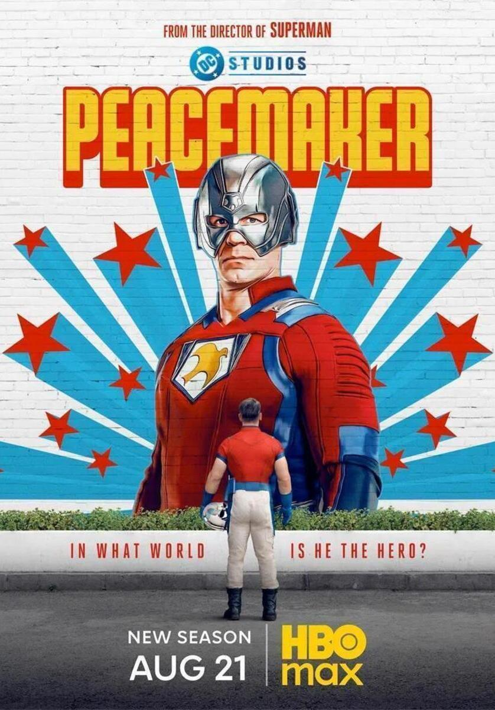
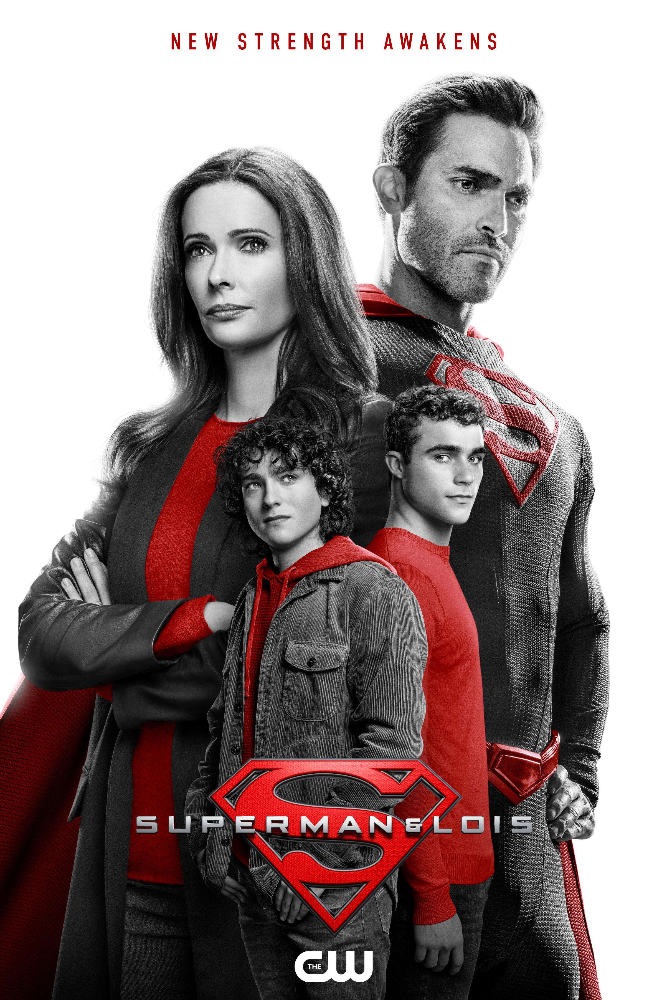
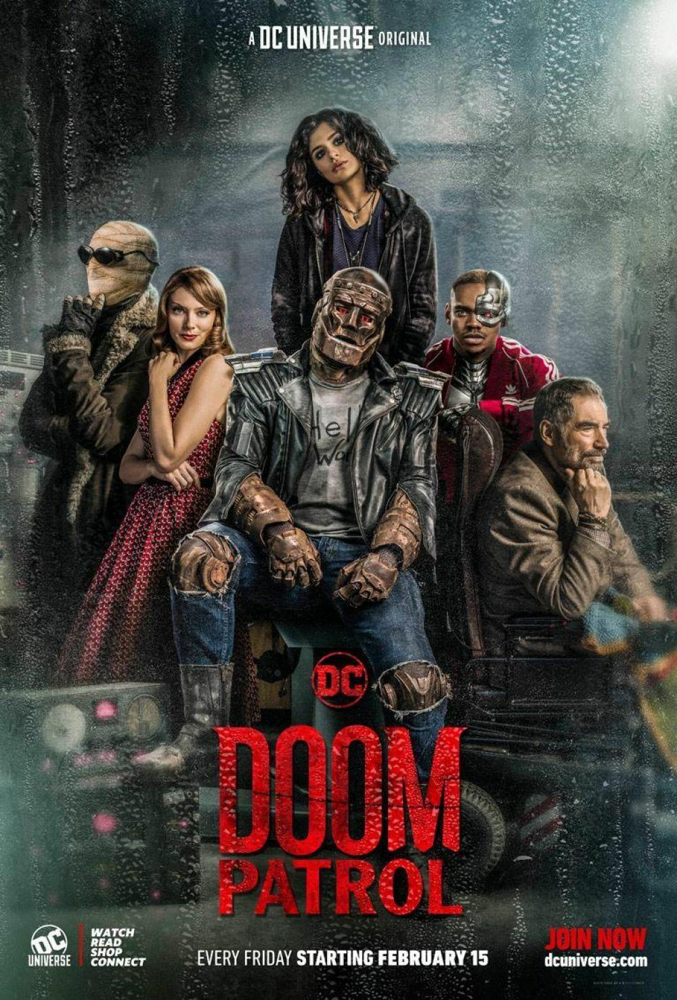
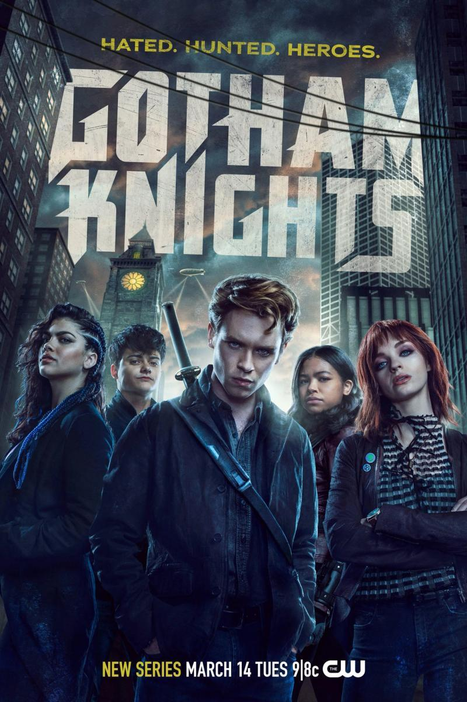

Series del Universo DC
Descubre las series de televisión y streaming que expanden el universo DC más allá de la pantalla grande,
ofreciendo historias profundas, desarrollo de personajes únicos y narrativas que complementan las películas.
| Serie | Imagen | Descripción | Temporadas | Plataforma |
|---|---|---|---|---|
| Titans |  |
Un grupo de jóvenes superhéroes liderados por Dick Grayson (Robin) se unen para combatir el mal. Una versión más madura y oscura de los Teen Titans con acción intensa y drama emocional. |
4 | HBO Max |
| Peacemaker |  | Continuación directa de The Suicide Squad, sigue a Christopher Smith en su misión de lograr la paz sin importar cuántas personas tenga que matar para conseguirla. |
1 | HBO Max |
| The Penguin |  |
Spin-off de The Batman que explora el ascenso al poder de Oswald Cobblepot en el bajo mundo criminal de Gotham City. Una historia de crimen y corrupción en el universo de Matt Reeves. |
1 | HBO |
| Superman & Lois |  | Clark Kent y Lois Lane regresan a Smallville con sus hijos gemelos adolescentes. La serie explora la vida familiar del Hombre de Acero mientras equilibra sus responsabilidades como padre y superhéroe. |
4 | The CW |
| Doom Patrol |  | Un grupo de héroes inadaptados con poderes únicos se unen bajo la tutela del misterioso Jefe. Una serie que combina drama, comedia y elementos surrealistas de manera brillante. |
4 | HBO Max |
| Harley Quinn |  |
Serie animada que sigue las aventuras de Harley Quinn después de separarse del Joker. Llena de humor negro, acción y una perspectiva fresca de los villanos de Gotham. |
4 | HBO Max |
| Gotham Knights |  | Tras la muerte de Batman, su hijo adoptivo se une con los hijos de sus enemigos para proteger Gotham City. Una nueva generación de héroes emerge de las sombras de la ciudad del crimen. |
1 | The CW |